Earlier this week, I had the honor to present a session for the Belgian MC2MC Microsoft community, as part of a broader online event week with other Belgian community User Groups (https://www.mc2mc.be/events/be-community-week-mc2mc-evening).
My session topic was based on a little real-life project I worked on myself only a few weeks ago, deploying a “Hugo” based static website on Azure Storage Account Static Site (Yes, this site you are reading right now…).
As there were quite some steps to go through, I decided to write a full blog post about it. And that’s exactly what brings you here…
If you are new to Hugo, have a look at the official website for more information: http://gohugo.io

Although Hugo supports both HTML and MarkDown, I decided to go for MarkDown; if this is unknown to you, think of it is a web page markup language, with a specific syntax. While it might feel difficult in the beginning, it is actually rather straight forward to use once you get the hang of it. I could also recommend MarkDown Monster as an editor, if you are not into using Visual Studio Code.
-—————-
1. Getting started
-
Install Hugo on your local machine, from http://gohugo.io (I’m running this on Windows 10, but it also supports Linux and MacOS)
-
Next, grab a copy of VS Code (http://code.visualstudio.com); this is my favorite for both terminal and MarkDown editing
-
From within VS Code, Choose “Open Folder”
-
Run Terminal
-
Run “Hugo version”

2. Create new site
-
Run “Hugo new site <sitename>”

-
Hugo default folder structure is created automatically

-
Download (or Clone GitHub) a theme from http://themes.gohugo.io, and extract the folders in the \themes folder + copy the config.toml from the \themes folder into the root of the site directory that got created in the previous step.
-
(Minimal is what I’m using for this blog site
-
Open browser http://localhost:1313
-
This opens the sample Theme-based website.

-
Base site is working fine;
-
Stop the running “Hugo Server” Process by pressing Ctrl-C in the terminal window.
-
to update or add new content, open the Content\post subfolder
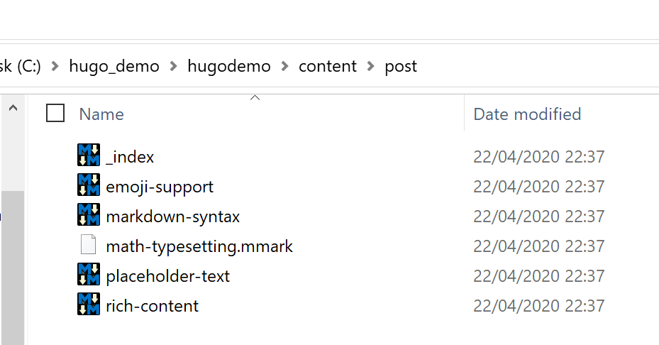
-
Create a new MarkDown document, or copy an existing one as a starting point; I personally use MarkdownMonster or Visual Studio Code as my MarkDown Editor, but any advanced text editor should work out fine.
-
For a cheat sheet of MarkDown code syntax, have a look here: https://github.com/adam-p/markdown-here/wiki/Markdown-Cheatsheet
-
edit some content in the page
-
Once your new post has been created, open your terminal again, and run “Hugo Server”. This will start a new web session. Validate from the browser on http://localhost:1313 if the new page is visible

-
Works!!
However, this is “only local” on our dev station; to prepare the site to get published to Azure, compile it by running “hugo” from the command prompt (instead of hugo server)

- This compile process creates the actual “web content” in a /public/ subfolder in the same directory as the hugo site itself.
3. Publish to Azure Storage Account
-
Deploy an Azure Storage Account v2 as a starter
-
From Settings, select Static website
-
Enter information for the default page and error page

-
Save the settings; Your static website URL gets generated and presented
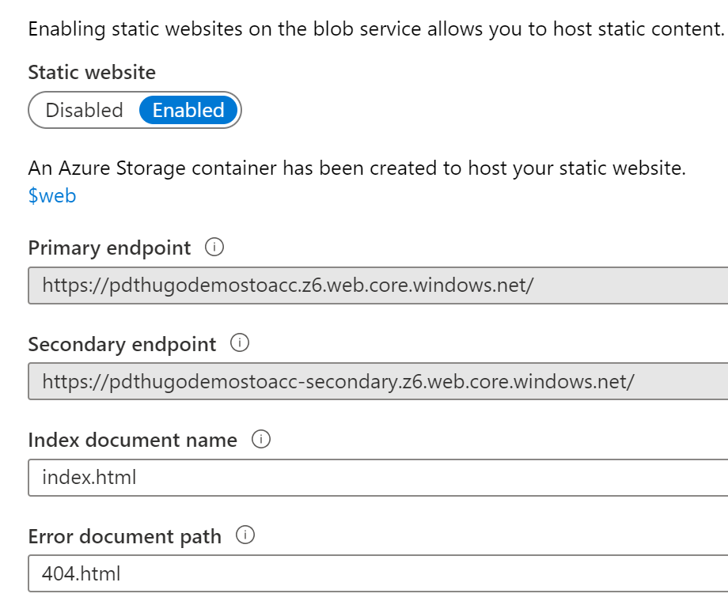
As we now have the storage account static site service up-and-running, we can deploy our content. I am using (and recommending!) Visual Studio Code to do this, but you could also copy the content in a manual way by using FTP or Azure Storage Explorer to do this.
-
From VSCode, add Storage Account Extension

-
From Command Palette : Azure Storage / Deploy to Static Website

-
Complete the prompts with answers from your Azure subscription and setup, and select your Hugo folder as a source. This will copy all files from the /public/ subfolder into the Storage Account $web folder
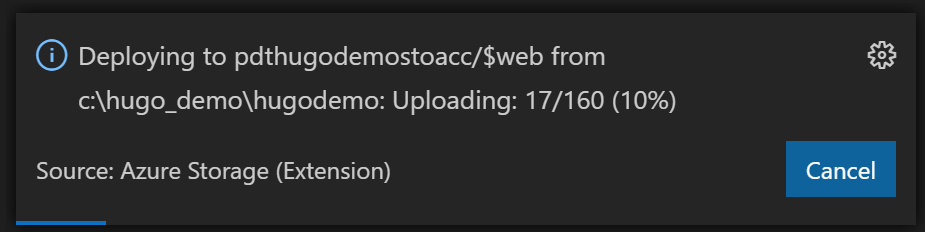
-
Wait for the process to complete successfully
-
Browse to the URL of the storage account

-
DONT PANIC!! THIS IS EXPECTED
-
The reason this FAILS is because Hugo is using the /public/ subfolder to publish all content; If you are just using flat HTML files in the Static Site, it will work right away.
-
try connecting to the URL path where our blog posts are stored, e.g. ../public/post/

-
The site page itself loads, but it’s not 100% OK ; we need to find a solution for that /public/ URL update. Good news is, Azure has such a solution built-in, which is called Azure Content Delivery Network – CDN.
Let’s deploy one.
4. Deploy & Publish with Azure CDN
-
New Resource / CDN /
-
Provide a Name + Resource Group and Subscription details
-
Pricing = Standard Microsoft
-
Select Create a CDN endpoint now
-
Provide a unique name for the URL
-
Origin type = Custom
-
Origin hostname = paste in the URL address of the Static Website without the https:// and without the trailing /

-
-
-
Once created, open the CDN Profile resource
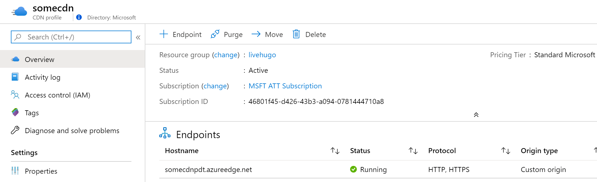
-
Select the Endpoint you defined under the Endpoints section
-
Under Settings / select Rules engine

-
In the Rules engine / select Add Action / Choose URL Rewrite
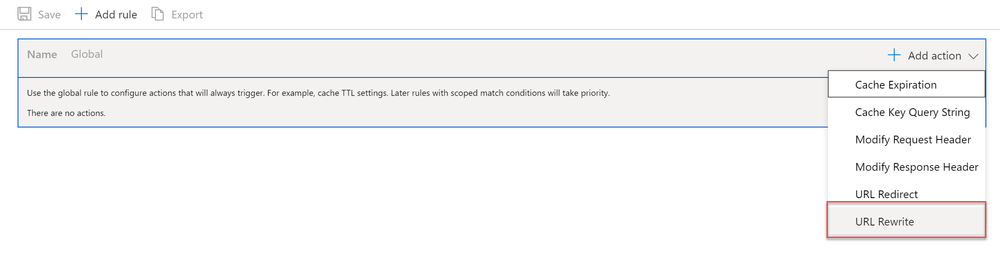
-
Create the following rule settings:
-
Source Pattern: /
-
Destionation: /public/
-
Preserve unmatched path: Yes
-
-
Save the changes, and wait for the prompt the configuration has been updated successfully. NOTE: it could take up to 10min before the changes are actually applied and working. So be patient
-
Once received, test the Azure CDN URL from the browser, and click through to a site subsection like Posts or Publications (if you have content in there…)

-
THIS WORKS!!
-
From here, you could add a custom domain option, together with integrating HTTPS using CDN Profile settings itself. I’m sure you will find out now by yourself how to do that.
-
However, allow me to continue on the scenario, and extending our setup with Azure Front Door, a Global Azure load balancing service, which also performs SSL offloading, Session Affinity, URL rewrite/redirection and probably the most important feature Web Application Firewall.
-
NOTE: from here, we won’t be able to stay within the <$5 /month consumption fee, as the required Azure Front Door rules will add an additional cost of +/- $20 /month, or +/-$50 /month if you enable the WAF option.
5. Deploying Azure Front Door
Technically, for this web site scenario, Azure Front Door offers all capabilities we used before from Azure CDN. Meaning, if you decide to go for Azure Front Door, you do not need Azure CDN.
-
New Resource / Front Door / Create

-
Complete the basic settings around Subscription, Resource Group and location
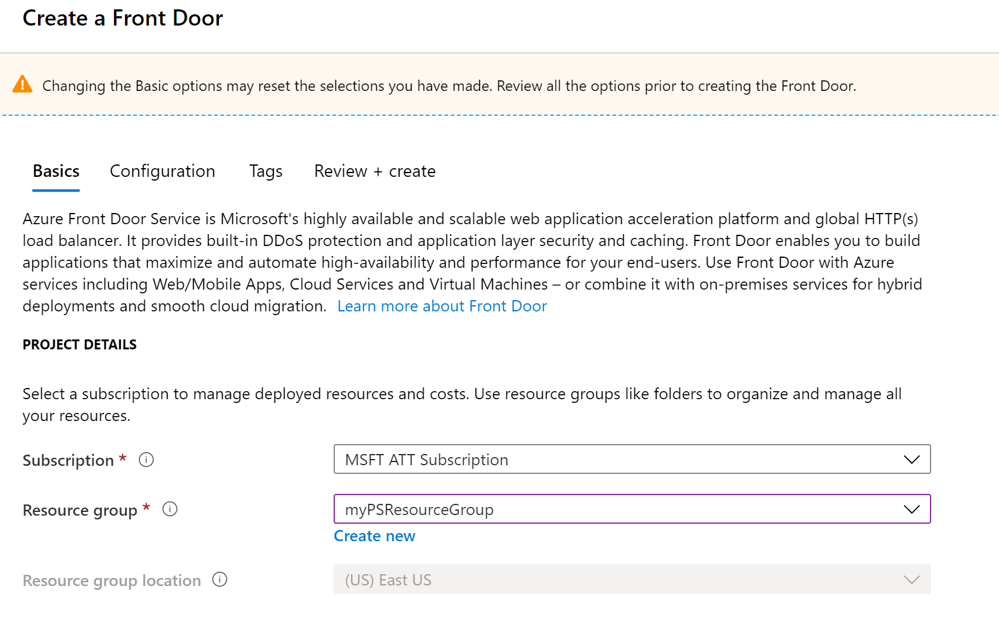
-
Move on to the Configuration step next
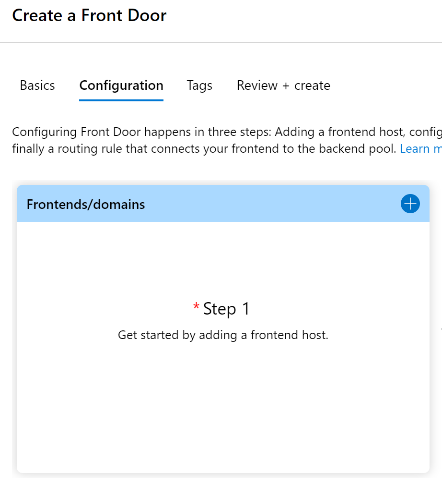
-
Click the + sign to add the Front Door Frontends/domains settings, and provide a unique name for the Front Door URL you want to use
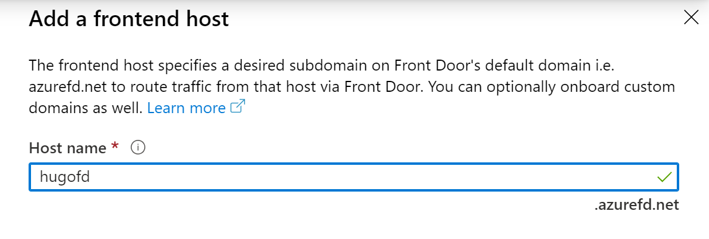
-
Continue with Step 2 where you define the backend pool settings. This is basically pointing Front Door to the Static Site Storage Account URL
-
Click “**Add BackEnd Pool”, and complete the requested parameters:
-
BackEnd Host Type: custom
-
Backend Host Name: the Static Web Site URL, without the https:// and trailing /
-
-
Accept / leave all other values as default

-
Confirm the Backend Pool settings ,which brings you back to the BackendPool settings tab. Here, leave the default values for Health Probes and Load Balancing for now
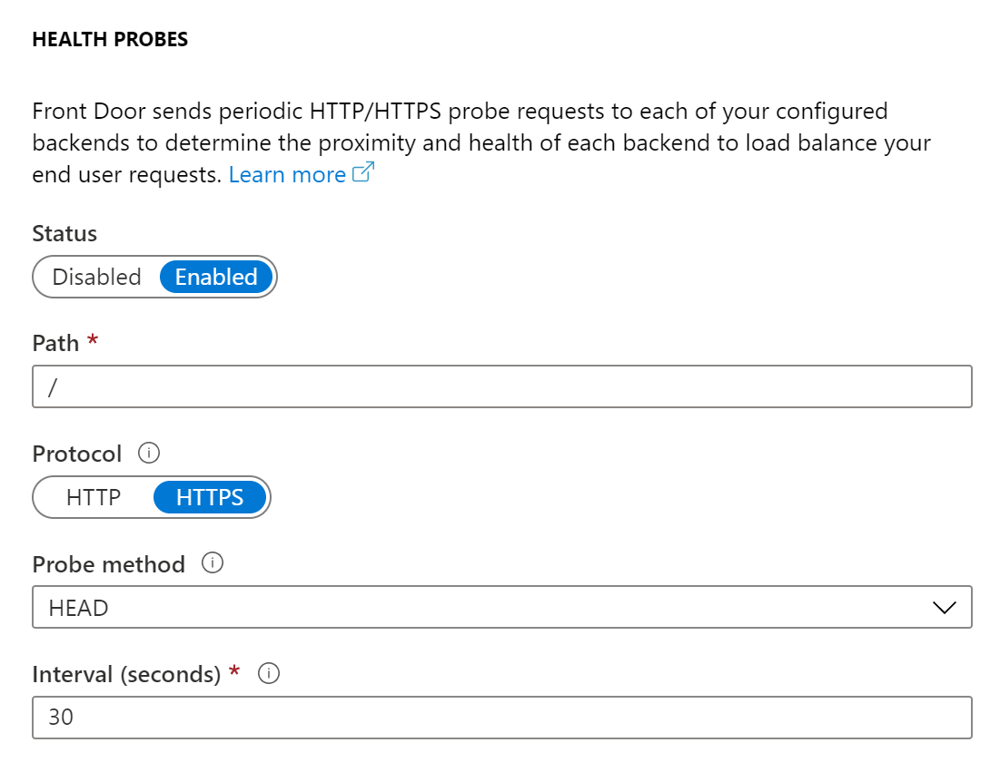
-
Confirm the BackendPool settings, and move on with Step 3, where you will define the necessary routing rule.

-
In the Add Rule parameter section, provide a name for the rule you are about to create. Accept the default values for Accepted Protocol, FrontEnd/domains and Patterns to Match.

-
In the Route details section, scroll down and change the setting for Custom forwarding path, adding the “/public/ path that is used by Hugo (Note: this path could be different, depending on the Hugo Theme; this path technically refers to the directory that Hugo uses to store the compiled site pages.

-
Wait for the Azure Front Door resource to get created; once this is complete, open your browser to the URL address of Front Door. This should open your web site in a nice looking way
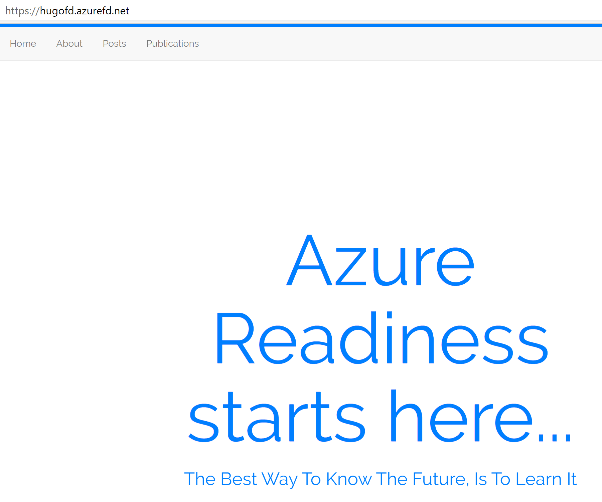
6. Configure Public Custom Domain Name to Azure Front Door
In this last section, we will update our Azure Front Door configuration for
a public custom domain name. This is built-in, and integrates a Let’s
Encrypt (FREE) SSL/TLS certificate to your web service. How cool is that!
**Note: you need to have a public DNS domain name already available, in
which you need to create a C-name alias record for the Azure Front Door
frontend/domain name you configured. E.g. my 007FFFLearning domain has a
“www” C-Name alias pointing to “hugofd.azurefd.net”**
-
From the Azure Front Door blade, select Front Door Designer; next, select Frontends/domains, and add a new custom domain
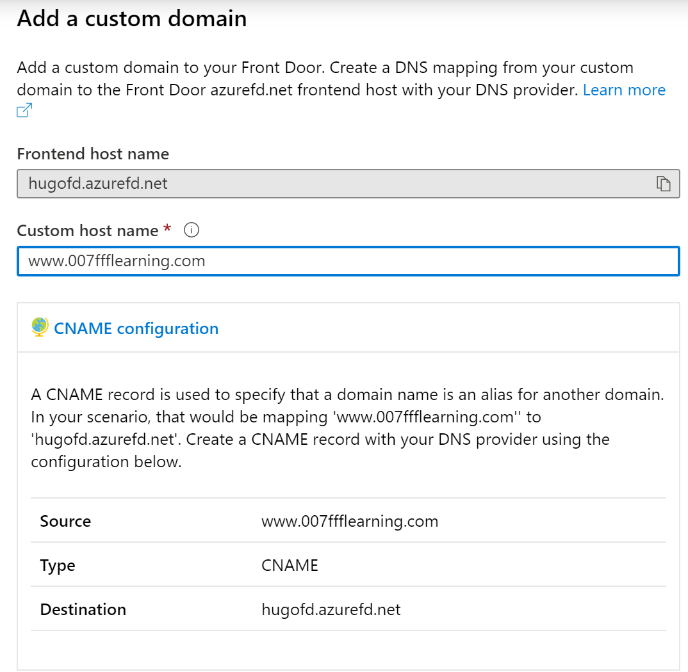
-
If you also want to add the Domain HTTPS option to the configuration, select this setting a bit more down in the blade. If you don’t have a PFX certificate file already for the public domain name space, have one generated by Front Door, by choosing Front Door managed.

-
Confirm the settings by clicking Add
-
Wait about 10 minutes to complete the SSL request status, resulting in the below view:

-
Once the custom domain is configured, we need to make one last change in our routing rules, adding the custom domain to the configuration. Therefore, select the routing rule you created earlier, and update its settings:
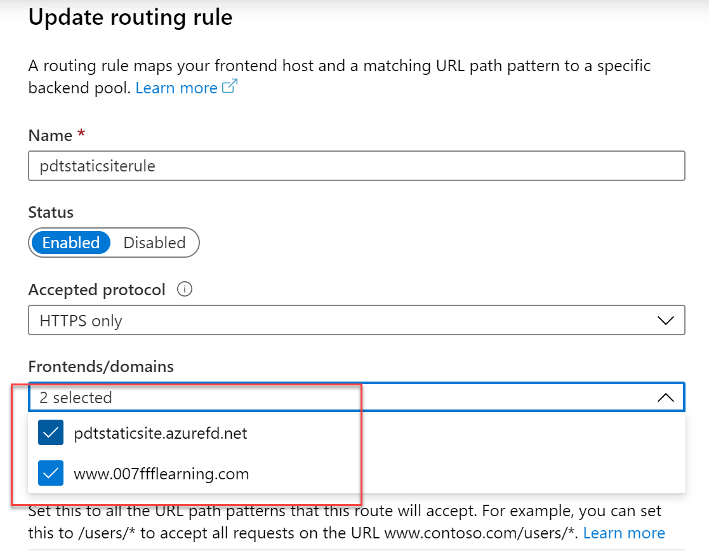
-
Save the changes, and wait for the update to get applied.
-
After only a few minutes, everything should be running smooth, allowing you to connect to your website custom domain url:

-
Selecting any of the subsections from the header menu, e.g. Posts will be nicely redirected to all posts, and allowing your readers to easily go from one blog article to the other.

Congrats!! You made it all the way to the end!
I hope you enjoyed this exercise, and are ready for fully working on your blog website now. Get back into your Visual Studio Code, and start hammering some MarkDown posts!
As always, I’m here for you if you are stuck somewhere, or want to let me know once your site is up-and-running.
Happy Hugo-ing!
Take care, Peter